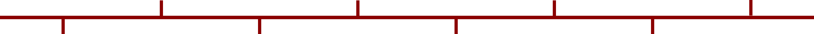

History
UKRAINE

-
Kyivan Rus (9–13 century)
Kyivan Rus was one of the first powerful states in Eastern Europe, with Kyiv as its political and cultural center. It developed strong trade routes connecting Scandinavia, Byzantium, and the East, which helped the economy grow. The state united different Slavic tribes under one rule and created early systems of law and governance. This period is considered the foundation of Ukrainian identity, culture, and statehood, and its influence is still visible in religion, language, and traditions today.
-
Christianization of Rus (988)
In 988, Prince Volodymyr the Great adopted Christianity from the Byzantine Empire and made it the official religion. This decision had a huge impact on society, introducing new traditions, education systems, and written language. Churches, monasteries, and schools were built, and art such as mosaics and icons became important cultural elements. Christianity also connected Kyivan Rus more closely with Europe and Byzantium, shaping its long-term cultural and political direction.
-
Mongol Invasion (13 century)
In the 13th century, Mongol forces invaded and destroyed many cities, including Kyiv. This led to the collapse of Kyivan Rus and caused a major decline in political and economic life. The region became fragmented and lost its independence, coming under foreign influence for many years. This invasion slowed development and changed the historical path of Ukrainian lands significantly.
-
Cossack Hetmanate (17 century)
During the 17th century, Ukrainian Cossacks formed a semi-independent state known as the Hetmanate. They played a major role in military defense and political life, fighting for autonomy from foreign powers. The Cossacks were known for their democratic traditions, military organization, and strong sense of freedom. This period became a symbol of Ukrainian independence and resistance, which still influences national identity today.
-
Division under Empires (18–19 century)
In the 18th and 19th centuries, Ukrainian territories were divided mainly between the Russian Empire and the Austro-Hungarian Empire. Political independence was limited, and the Ukrainian language was often restricted, especially in the Russian-controlled regions. However, this period also saw the rise of national consciousness, literature, and cultural revival. Writers, poets, and intellectuals helped preserve Ukrainian identity and traditions despite foreign rule.
-
Independence of Ukraine (1991)
In 1991, after the collapse of the Soviet Union, Ukraine declared independence and became a sovereign country. A national referendum confirmed the decision, showing strong support from the population. This marked the beginning of political, economic, and social transformation, as Ukraine started building its own government and international relationships. Independence remains one of the most important milestones in modern Ukrainian history.
-
Revolution of Dignity (2014)
The Revolution of Dignity, also known as Euromaidan, began as protests against government decisions but quickly grew into a nationwide movement for democracy and human rights. People demanded transparency, justice, and closer ties with Europe. The protests led to significant political changes and strengthened Ukraine’s direction toward European integration. This event showed the power of civil society and unity among citizens.
-
Full-Scale War (2022 – present)
In 2022, Russia launched a full-scale invasion of Ukraine, leading to widespread destruction and humanitarian challenges. The war has affected millions of people and changed global political dynamics. Despite this, Ukraine has shown strong resistance, unity, and determination to defend its independence. The conflict has also increased international support for Ukraine and strengthened its national identity.